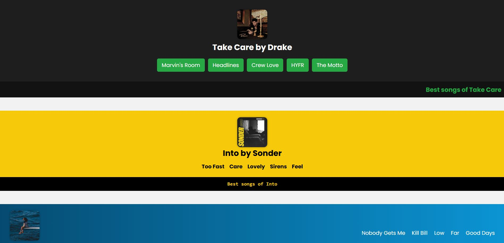

SW1
This project was created as part of a Web Design seatwork focused on mastering HTML structure, particularly the use of semantic header and footer elements. The content revolves around three featured music artists Drake, SZA, and Sonder and is designed to simulate a basic landing page or fan site layout.
View Site GitHub